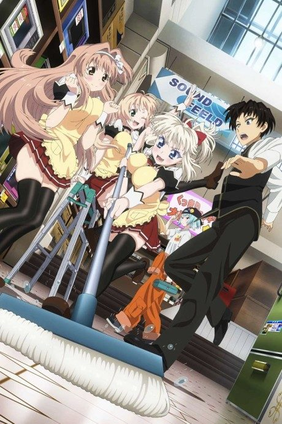
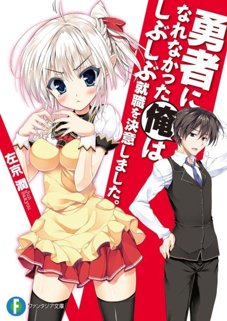

I Couldn’t Become a Hero, So I Reluctantly Decided to Get a Job.
勇者になれなかった俺はしぶしぶ就職を決意しました。
Raul never got to become a hero because the Demon Lord was defeated first. Now he works in a shop, where the Demon Lord's daughter applies for a job.
We haven't found where the anime ends in the light novel yet.
6.4AniList score
—Animeter, no votes yet
12episodes
Rate it or report where you stopped
Watch order
In airing order. Episode numbers on this site count straight through every season, so season 2 starts at episode —.
1
2013 · TV
I Couldn’t Become a Hero, So I Reluctantly Decided to Get a Job.
Episodes1–1212 ep
Films, OVAs and specials
Not counted in the episode numbers above.
·
2014 · OVA
I Couldn’t Become a Hero, So I Reluctantly Decided to Get a Job. OVA
Sources: AniList